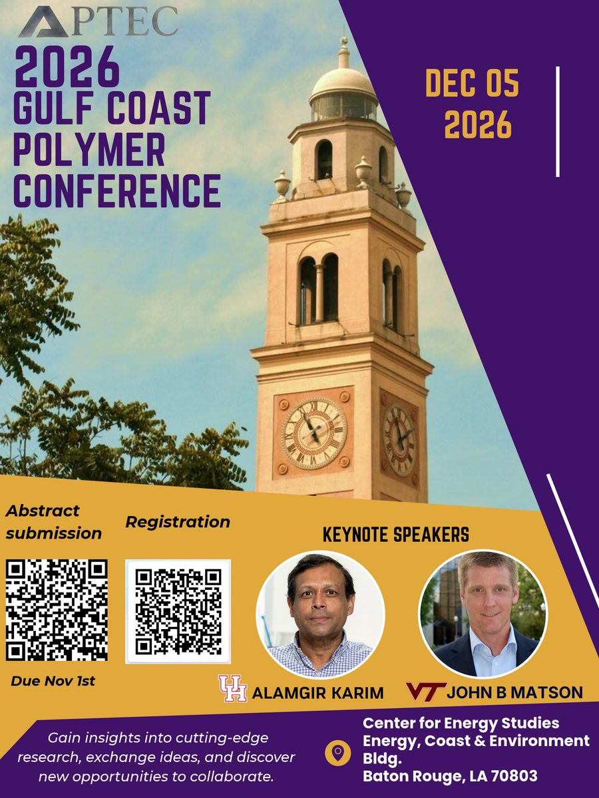
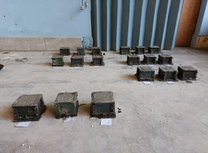
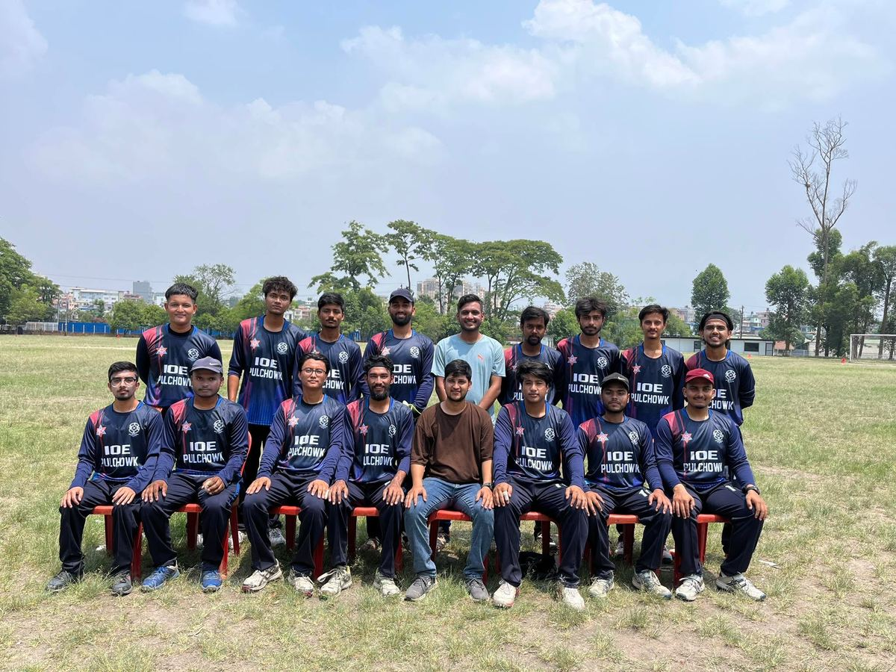
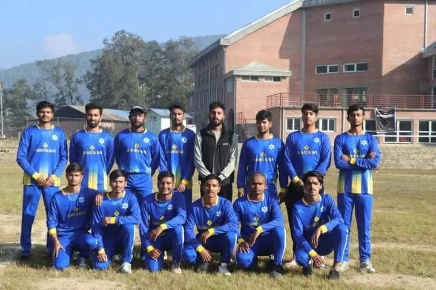
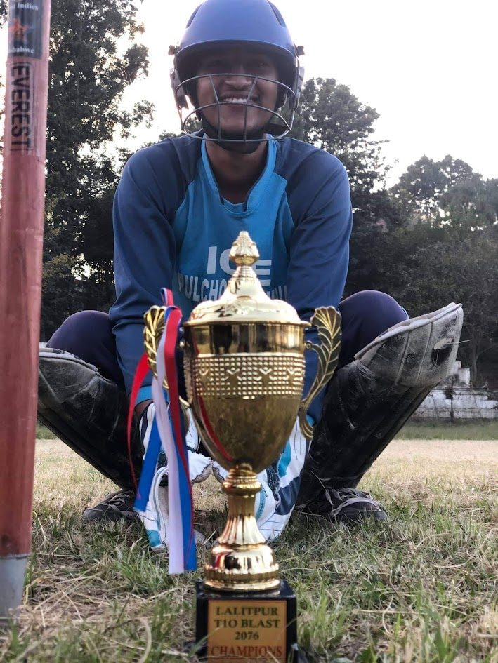

Leadership
Outside class and research, I have helped run student events and captained my college cricket team.
Gulf Coast Polymer Conference
The Gulf Coast Polymer Conference, earlier called the APTEC meeting, is run mostly by graduate students and postdocs from universities along the Gulf Coast. It started in 2013 at the University of Southern Mississippi and has moved between Tulane, LSU, Southeastern Louisiana University and Southern Miss. Students present their work and meet speakers from universities, national labs and industry. It took its current name in 2023.
I joined the organizing committee in May 2026. The 2026 conference is at LSU on December 5, in the Energy, Coast and Environment Building, with keynote talks by Alamgir Karim (University of Houston) and John B. Matson (Virginia Tech).


FLOATcrete competition
FLOATcrete was one of the competitions at AADHAR 2079, the 13th National Civil Engineering Exhibition cum Competition run by CESS at Pulchowk Campus. Teams had to make concrete that floats in water and is still strong.
As a coordinator, I guided 36 students in 12 teams while they designed and cast their concrete, and I helped run lab training on the materials and methods.


College cricket team
I captained the Pulchowk Campus cricket team in 2022 and 2023 and led it in three major inter-college tournaments. The team won the Lalitpur T10 Blast and was runner-up in a tournament organized by the Pakistan Embassy.





